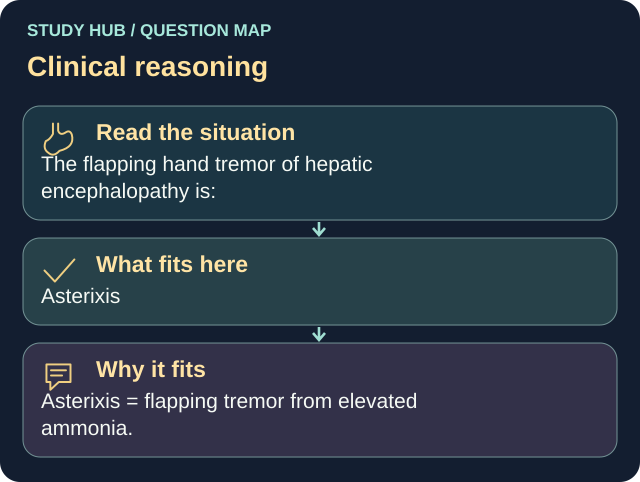

The flapping hand tremor of hepatic encephalopathy is:
Answer
Asterixis
Reasoning
Asterixis = flapping tremor from elevated ammonia.
Why the other answers do not fit
- Clonus
- Fasciculation
- Chvostek's sign
Shared reasoning for choices without a separate note: Asterixis = flapping tremor from elevated ammonia.
